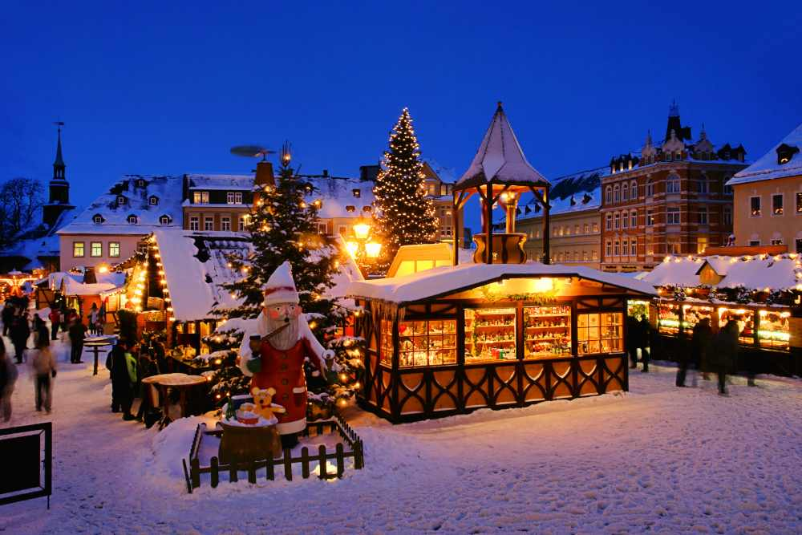

A Christmas market is a festive event, typically held in town squares or public spaces, where vendors sell holiday-themed goods, food, and drinks. Originating in Europe, particularly in Germany, these markets have become a beloved tradition in many countries. The market is often adorned with twinkling lights, Christmas decorations, and seasonal music, creating a magical atmosphere. Shoppers can find a wide range of items, such as handmade crafts, ornaments, seasonal treats like gingerbread and mulled wine, and gifts for loved ones. Many Christmas markets also offer entertainment, like carolers, ice skating rinks, and visits with Santa Claus, making them a joyful destination for families and visitors of all ages. These markets not only provide an opportunity to buy unique holiday items but also serve as a gathering place to celebrate the spirit of the season
Did you hear about what happened to the man who stole the advent calendar? He got 25 days
